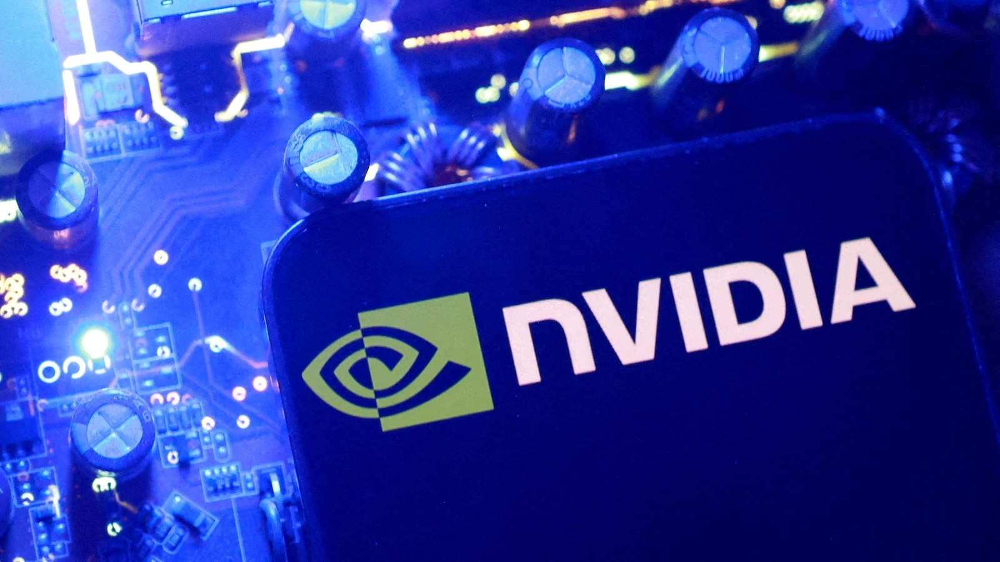

Как сообщает ABC News, груз NVIDIA вёз трейлер, замаскированный под обычную фуру с продуктами питания. 29 августа машина загрузила шесть паллет с оборудованием для дата-центров в Окленде (Калифорния) и выехала в Техас. По маршруту фура несколько раз останавливалась — нештатно, — а затем пропала вместе с водителями. Тревогу забили только через несколько дней, заявление в полицию подали 13 сентября. Спустя два месяца ни чипов, ни похитителей не нашли; стоимость груза — 11,4 миллиона долларов.
Осенью 2025 года в Северную Калифорнию прошла волна обысков в Фримонте и Юнити-Сити: фигуранты дела — оборудование NVIDIA на 7,5 миллиона долларов. А в сентябре этого года случилось ограбление, от которого в индустрии до сих пор улыбаются сквозь слёзы: в Ньюарке угнали два трейлера с логотипом NVIDIA — они принадлежат автопилот-стартапу PlusAI, партнёру NVIDIA по беспилотным грузовикам. Внутри воров ждал сюрприз: 18-20 тонн песка, которым PlusAI имитирует груз при тестах автопилота. Трейлеры бросили вскрытыми; кабины с настоящей вычислительной техникой стояли в полукилометре на складе и остались нетронутыми.
Показательно, чтоподсказку дал друг руководителя PlusAI, увидевший «его» трейлеры чужими силами припаркованными у офиса.
Кражи ИИ-оборудования — новая реальность логистики: по данным платформы Overhaul, потери от хищений оборудования для дата-центров — около 150 миллионов долларов, рост на треть с 2024 года. Чипы NVIDIA сегодня — это «цифровое золото»: дорогое, компактное, ликвидное, без привязки к владельцу. Логисты отвечают тем же, чем банки отвечают на ограбления: конспирацией — не пиши «NVIDIA» на фуре, не свети маршрут. Но у этой гонки вооружений есть смешная деталь: маскировка из «песочного» трейлера сработала лучше, чем конспирация «продуктовоза». Вор берёт то, что видит, — и рынок кражи начал торговать не грузом, а этикеткой. Для крупных закупщиков вывод: GPS-маяки в паллетах, датчики открытия и смена «спокойных» коробок каждые несколько рейсов.
Полиция Окленда расследование не комментирует, NVIDIA запросам изданий не отвечает. Чипы на 11,4 миллиона долларов, судя по всему, уже распроданы по частям — дата-центров с «анонимным» железом в мире хватает.